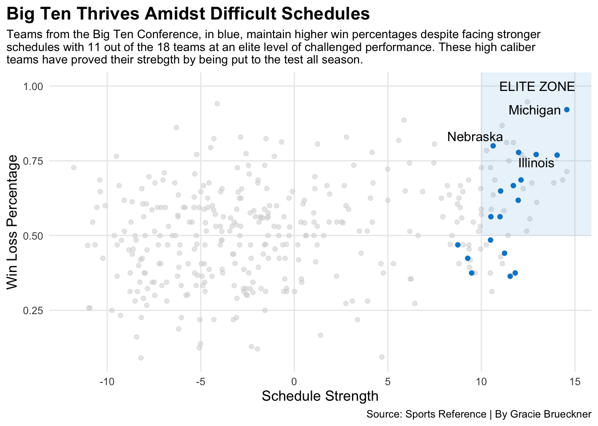
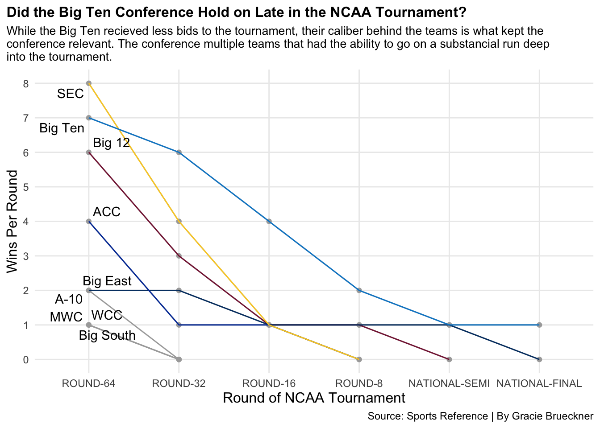

Was the Big Ten actually the best conference? Or did it just appear that way?
basketball
ncaa tournament
big ten conference
Author
Gracie Brueckner
Published
April 10, 2026
After watching the 2025-2026 Men’s College Basketball season, there is one major takeaway: The Big Ten conference was stacked with high-caliber teams. Finishing out the season, the conference had seven teams in the AP Poll Top 25 rankings, with a No. 1 team and National Champion, Michigan, leading the way.
However, the strength of a conference is always heavily debated. The SEC had higher representation in NCAA Tournament bids. The Big East was also represented in the National Championship. The Big 12 had strong expectations going into this season with teams like Arizona, Houston, BYU and Kansas.
The question becomes: Was the Big Ten actually the best conference? Or did it just appear that way?
Let’s take a look at the numbers.
It is impossible not to talk about March. Conference-to-conference matchups allow for a true understanding of overall performance. This table compares NCAA tournament wins and losses broken down by conference. While some conferences had more teams make the tournament, the Big Ten stood apart because of its success. They won when it truly mattered.
Code
library(tidyverse)
── Attaching core tidyverse packages ──────────────────────── tidyverse 2.0.0 ──
✔ dplyr 1.1.4 ✔ readr 2.1.6
✔ forcats 1.0.1 ✔ stringr 1.6.0
✔ ggplot2 4.0.1 ✔ tibble 3.3.1
✔ lubridate 1.9.4 ✔ tidyr 1.3.2
✔ purrr 1.2.1
── Conflicts ────────────────────────────────────────── tidyverse_conflicts() ──
✖ dplyr::filter() masks stats::filter()
✖ dplyr::lag() masks stats::lag()
ℹ Use the conflicted package (<http://conflicted.r-lib.org/>) to force all conflicts to become errors
Code
library(gt)logs26 <-read_csv("logs26.csv")
Rows: 12052 Columns: 55
── Column specification ────────────────────────────────────────────────────────
Delimiter: ","
chr (9): home_away, team, opponent, game_type, result, overtime, url, seas...
dbl (45): game_number, team_score, opponent_score, team_fg, team_fga, team_...
date (1): game_date
ℹ Use `spec()` to retrieve the full column specification for this data.
ℹ Specify the column types or set `show_col_types = FALSE` to quiet this message.
Code
postseason <- logs26 |>filter(game_date >=as.Date("2026-03-15"))powerfour <-c("SEC", "Big Ten", "Big 12", "ACC", "Big East")postseason |>filter(game_type !="CTOURN") |>filter(game_type !="NIT") |>filter(game_type !="CBC") |>filter(conference %in% powerfour) |>group_by(conference, result) |>tally() |>pivot_wider(names_from = result, values_from = n) |>select(conference, W, L) |>arrange(desc(W)) |>ungroup() |>gt() |>data_color(columns =vars(W),colors = scales::col_numeric(palette =c("white", "skyblue", "#0088ce"),domain =NULL) ) |>data_color(columns =vars(L),colors = scales::col_numeric(palette =c("white", "white", "grey"),domain =NULL) ) |>cols_label(L ="NCAA Tournament Losses",W ="NCAA Tournament Wins",conference ="Conference" ) |>tab_header(title ="The Big Ten Proved Itself with Wins in March",subtitle ="Out of the Power Five Conferences, the Big Ten claimed their fame for success within the tournament. With many teams advancing to later rounds, the win count started to stack up. The total tally is where the true dominance is measured, and the Big Ten dominated the tournament. " ) |>tab_style(style =cell_text(color ="black", weight ="bold", align ="left"),locations =cells_title("title") ) |>tab_style(style =cell_text(color ="black", align ="left"),locations =cells_title("subtitle") ) |>tab_source_note(source_note =md("**By:** Gracie Brueckner | **Source:** Sports Reference") )
Warning: Since gt v0.9.0, the `colors` argument has been deprecated.
• Please use the `fn` argument instead.
This warning is displayed once every 8 hours.
Warning: Since gt v0.3.0, `columns = vars(...)` has been deprecated.
• Please use `columns = c(...)` instead.
Since gt v0.3.0, `columns = vars(...)` has been deprecated.
• Please use `columns = c(...)` instead.
The Big Ten Proved Itself with Wins in March
Out of the Power Five Conferences, the Big Ten claimed their fame for success within the tournament. With many teams advancing to later rounds, the win count started to stack up. The total tally is where the true dominance is measured, and the Big Ten dominated the tournament.
Conference
NCAA Tournament Wins
NCAA Tournament Losses
Big Ten
21
8
SEC
14
10
Big 12
11
8
Big East
7
3
ACC
6
8
By: Gracie Brueckner | Source: Sports Reference
While the Big Ten’s top teams did have high winning percentages, it is also important to take into account the strength of schedule behind those numbers. The results are insightful: high caliber opponents put teams to the real test. They can expose flaws or showcase that a team has what it takes.
Because the Big Ten has such depth, the strength of schedule for teams within the conference is high. However, it is still up to performance to separate them. This is important because these teams have been tested all season, yet they continue to perform.
Where do these Big Ten teams sit compared to others in terms of difficulty behind the wins? Is a high winning percentage enough with a Big Ten schedule?
New names:
Rows: 365 Columns: 38
── Column specification
──────────────────────────────────────────────────────── Delimiter: "," chr
(1): School dbl (32): Rk, G, W...4, L...5, W-L%, SRS, SOS, W...10, L...11,
W...13, L...1... lgl (5): ...9, ...12, ...15, ...18, ...21
ℹ Use `spec()` to retrieve the full column specification for this data. ℹ
Specify the column types or set `show_col_types = FALSE` to quiet this message.
• `W` -> `W...4`
• `L` -> `L...5`
• `` -> `...9`
• `W` -> `W...10`
• `L` -> `L...11`
• `` -> `...12`
• `W` -> `W...13`
• `L` -> `L...14`
• `` -> `...15`
• `W` -> `W...16`
• `L` -> `L...17`
• `` -> `...18`
• `` -> `...21`
Code
big <-c("Nebraska", "Iowa", "Northwestern", "Minnesota", "Wisconsin", "Illinois", "Indiana", "Purdue", "Michigan", "Michigan State", "Ohio State", "Penn State", "Rutgers", "Maryland", "Oregon", "Washington", "Southern California", "UCLA")bigten <- stats26 |>filter(School %in% big) bigtenlabels <- bigten |>filter(School =="Michigan"| School =="Nebraska"| School =="Illinois") ggplot() +geom_point(data=stats26, aes(x=SOS, y=`W-L%`), color="lightgrey", alpha=.5) +geom_point(data=bigten,aes(x=SOS, y=`W-L%`),color="#0088ce") +annotate("rect", fill ="#0088ce", alpha =0.1, xmin =10, xmax =Inf,ymin = .5, ymax =Inf) +geom_text(aes(x=13, y=1.0), label="ELITE ZONE") +geom_text_repel(data=bigtenlabels, aes(x=SOS, y=`W-L%`, label=School)) +labs(x ="Schedule Strength",y ="Win Loss Percentage",title ="Big Ten Thrives Amidst Difficult Schedules",subtitle ="Teams from the Big Ten Conference, in blue, maintain higher win percentages despite facing stronger\nschedules with 11 out of the 18 teams at an elite level of challenged performance. These high caliber\nteams have proved their strebgth by being put to the test all season.",caption="Source: Sports Reference | By Gracie Brueckner") +theme_minimal() +theme(plot.title =element_text(size =15, face ="bold"),axis.title =element_text(size =12), plot.subtitle =element_text(size=10), panel.grid.minor =element_blank(),plot.title.position ="plot" )

While other conferences had many teams fall to competition in early rounds, the Big Ten remained a force deep into the tournament. The conference stands out for its ability to keep multiple teams relevant in the National Semis and Finals conversation. In fact, there were many instances where Big Ten teams had to eliminate others to continue their runs. Success wasn’t just measured by one powerhouse team: it was conference-wide.
So, how much depth did the Big Ten truly have compared to other conferences?
Code
library(tidyverse)logs26 <-read_csv("logs26.csv")
Rows: 12052 Columns: 55
── Column specification ────────────────────────────────────────────────────────
Delimiter: ","
chr (9): home_away, team, opponent, game_type, result, overtime, url, seas...
dbl (45): game_number, team_score, opponent_score, team_fg, team_fga, team_...
date (1): game_date
ℹ Use `spec()` to retrieve the full column specification for this data.
ℹ Specify the column types or set `show_col_types = FALSE` to quiet this message.
Rows: 33 Columns: 4
── Column specification ────────────────────────────────────────────────────────
Delimiter: ","
chr (3): conference, result, game_type
dbl (1): n
ℹ Use `spec()` to retrieve the full column specification for this data.
ℹ Specify the column types or set `show_col_types = FALSE` to quiet this message.
Code
postwins$game_type <-factor(postwins$game_type, levels=c("ROUND-64", "ROUND-32", "ROUND-16", "ROUND-8", "NATIONAL-SEMI", "NATIONAL-FINAL"))round64 <- postwins |>filter(game_type =="ROUND-64")postbigten <- postwins |>filter(conference =="Big Ten")postSEC <- postwins |>filter(conference =="SEC")postbig12 <- postwins |>filter (conference =="Big 12")postACC <- postwins |>filter (conference =="ACC")postbigeast <- postwins |>filter(conference =="Big East")ggplot() +geom_line(data=postwins, aes(x=game_type, y=n, group=conference), color="darkgrey") +geom_point(data=postwins, aes(x=game_type, y=n), color="darkgrey") +geom_line(data=postbig12, aes(x=game_type, y=n, group=conference), color="#862041") +geom_line(data=postbigeast, aes(x=game_type, y=n, group=conference), color="#003C71") +geom_line(data=postACC, aes(x=game_type, y=n, group=conference), color="#013ca6") +geom_line(data=postSEC, aes(x=game_type, y=n, group=conference), color="#fbce28") +geom_line(data=postbigten, aes(x=game_type, y=n, group=conference), color="#0088ce") +geom_text_repel(data=round64, aes(x=game_type, y=n, label=conference)) +scale_y_continuous(breaks=c(0,1,2,3,4,5,6,7,8,9,10)) +labs(x ="Round of NCAA Tournament",y ="Wins Per Round",title ="Did the Big Ten Conference Hold on Late in the NCAA Tournament?",subtitle ="While the Big Ten recieved less bids to the tournament, their caliber behind the teams is what kept the\nconference relevant. The conference multiple teams that had the ability to go on a substancial run deep\ninto the tournament.",caption="Source: Sports Reference | By Gracie Brueckner") +theme_minimal() +theme(plot.title =element_text(size =12, face ="bold"),axis.title =element_text(size =12), plot.subtitle =element_text(size=10), panel.grid.minor =element_blank(),plot.title.position ="plot" )

The evidence is there.
The Big Ten proved it had both depth and consistency. While other conferences had more bids, the Big Ten showed its strength through performance in March. Some conferences saw early success which led to early exits, but the Big Ten advanced through tough competition: competition they had faced all season.
This data suggests that the dominance wasn’t just perception, but the result of actual performance.